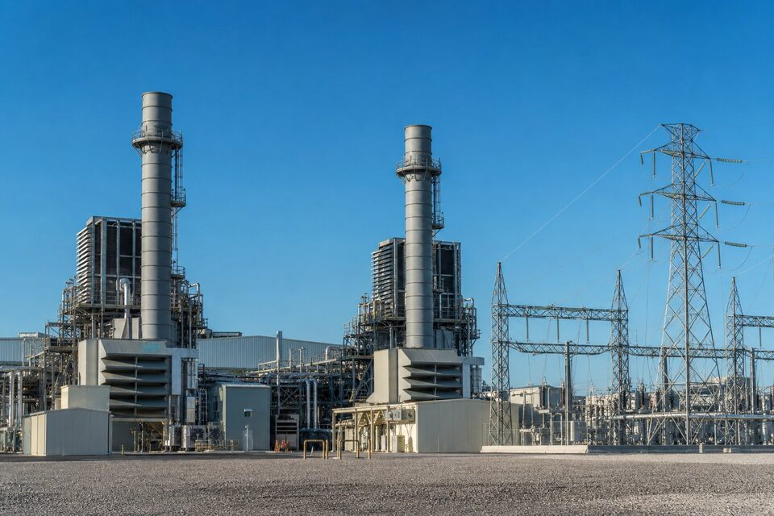

ساختار یک نیروگاه سیکل ترکیبی
در سیکل ترکیبی، انرژی ابتدا در توربین گاز و سپس در توربین بخار استحصال میشود تا راندمان کل از حدود ۳۵ درصد در سیکلهای ساده به بیش از ۵۵ درصد برسد. گازهای داغ خروجی توربین گاز وارد بویلر بازیابی حرارت یا (HRSG) میشوند و بخار تولیدی، توربین بخار را میچرخاند. این ساختار یعنی زنجیره تامین نیروگاه سه حوزه متفاوت دارد: تجهیزات دوار سرعت بالا با فناوری انحصاری سازندگان معدود، سطوح تبادل حرارت فشار بالا با متریالهای خاص، و سیستمهای الکتریکی و کنترلی گسترده. هر حوزه استانداردها، لایسنسورها و بازرسیهای مستقل خود را دارد و برنامه خرید باید هر سه را همزمان مدیریت کند؛ تمرکز صرف بر تجهیزات اصلی و غفلت از اقلام جانبی، یکی از دلایل رایج تاخیر پروژههاست.

اقلام بحرانی و مسیر زمانی
در برنامه خرید نیروگاه، اقلام بر اساس زمان ساخت و اثر بر مسیر بحرانی اولویتبندی میشوند. توربین گاز و ژنراتور معمولا با بیشترین زمان تحویل، اولین قراردادها هستند و اسلاتهای ساخت سازندگان بزرگ باید از ماهها قبل رزرو شود. بویلر بازیابی حرارت، بسته به طراحی، به صورت پکیج کامل یا اجزای مونتاژی در سایت ساخته میشود و زمان ساخت آن نیز بالاست. ترانسفورماتورهای اصلی، دکلها و تجهیزات پست خروجی نیز زمانبرند. در مقابل، هزاران قلم پایپینگ، شیرآلات و ابزار دقیق با وجود ارزش کمتر، در صورت تاخیر میتوانند پیشرفت نصب را متوقف کنند؛ بنابراین برنامه خرید باید هم اقلام گرانقیمت و هم اقلام پرتعداد را با نقاط عطف شفاف پوشش دهد.
متریال و استانداردهای نیروگاهی
بخش بخار نیروگاه، دنیای استانداردهای (ASME) است: بویلرها و لولههای فشار بالا بر اساس کدهای دیگ بخار طراحی و ساخته میشوند و هر اتصال جوشی باید ردیابی مدارک داشته باشد. لولههای سوپرهیتر و ریهیتر از آلیاژهای مقاوم به خزش با کنترل سختگیرانه ساخت انتخاب میشوند، چون در دماهای بالای ۵۰۰ درجه و فشارهای بالا کار میکنند. در بخش توربین گاز، قطعات داغ از سوپرآلیاژهای خاص با پوششهای حرارتی ساخته میشوند و معمولا فقط از مجاری مجاز سازنده اصلی قابل تامیناند. برای خریدار، معنای عملی این است که مشخصه متریال، استاندارد ساخت و مرجع بازرسی هر قلم باید از مرحله استعلام روشن باشد و پیشنهاد صرفا بر اساس ابعاد و فشار، فاقد اعتبار فنی است.
بازرسی و کنترل کیفیت
- بازرسی حین ساخت: نظارت بر فرایندهای جوشکاری، عملیات حرارتی و آزمونهای غیرمخرب.
- آزمونهای کارخانهای: تست هیدرواستاتیک بویلر، بالانس روتور و آزمون عملکرد پکیجها.
- بازرسی شخص ثالث: برای اقلام اصلی معمولا شرکتهای بازرسی مورد تایید کارفرما الزامی است.
- مدارک ردیابی: گواهیهای متریال با ذکر ذوب، آزمونهای مکانیکی و شیمیایی برای هر قلم.
- بازرسی بستهبندی و حمل: حفاظت سطوح ماشینکاریشده و تثبیت بارهای سنگین.
در تجهیزات دوار، حساسیت بازرسی بالاتر است: هر گونه آسیب در حمل یا نصب نامناسب میتواند به ارتعاش و خرابی زودرس منجر شود. به همین دلیل سازندگان معتبر، نماینده نصب خود را برای سوپروایژن اعزام میکنند و عدم استفاده از این خدمات معمولا گارانتی را باطل میکند. هماهنگی این خدمات در زمان قرارداد، بسیار ارزانتر از مذاکره اضطراری پس از خرابی است و باید در بودجه اولیه دیده شود.
راهبردهای خرید و کاهش ریسک
در بازار نیروگاهی، چند راهبرد عملی ریسک را کاهش میدهند. اول، عقد قراردادهای بلندمدت با سازندگان اصلی برای قطعات یدکی پرمصرف مانند فیلترها، پرهها و یاتاقانها، که هم قیمت را تثبیت و هم تحویل را تضمین میکند. دوم، موازیسازی استعلام برای اقلام بدون فناوری انحصاری مانند پایپینگ و شیرآلات، که رقابت قیمت را ممکن میسازد. سوم، پیشخرید متریالهای با زمان تحویل بالا مانند لولههای آلیاژی خاص در زمان مناسب بازار. و چهارم، شفافسازی شرایط فورس ماژور و جریمه تاخیر در قراردادها، چون پروژههای نیروگاهی بیش از هر صنعت دیگری با جریمههای دوطرفه سر و کار دارند. استفاده از مشاور خرید آشنا با اکوسیستم سازندگان نیروگاهی نیز در پروژههای اول، هزینهای است که چند برابر بازمیگردد.
مستندسازی و مدارک تحویلی نیروگاهی
در پروژههای نیروگاهی، مدارک تحویلی به اندازه خود تجهیزات ارزش دارند، چون بهرهبرداری، تعمیرات و حتی فروش برق در آینده به آنها وابسته است. هر تجهیز اصلی باید با پروندهای کامل شامل نقشههای چونساخت، گواهیهای متریال با ردیابی ذوب، گزارش آزمونهای کارخانهای و میدانی، دستورالعملهای نصب و راهاندازی و فهرست قطعات یدکی توصیهشده تحویل شود. این پروندهها باید از مرحله قرارداد در فهرست مدارک الزامی تعریف و پرداختهای مرحلهای به ارائه آنها مشروط شوند؛ تجربه پروژههای متعدد نشان میدهد مدارکی که در زمان تحویل گرفته نشوند، در سالهای بهرهبرداری به ندرت قابل بازیابیاند و هزینه بازسازی آنها چند برابر هزینه اولیه خواهد بود.
جمعبندی
تامین تجهیزات نیروگاه سیکل ترکیبی، مدیریت همزمان فناوریهای انحصاری، متریالهای خاص و زمانبندی فشرده است. با شناسایی اقلام بحرانی، رعایت استانداردهای (ASME)، بازرسیهای چندلایه و قراردادهای شفاف، میتوان ریسک تاخیر و هزینه را کنترل کرد و نیروگاه را در زمان برنامهریزیشده به بهرهبرداری رساند.
سوالات رایج
یک نیروگاه سیکل ترکیبی از چه بخشهای اصلی تشکیل شده است؟
توربین گاز، بویلر بازیابی حرارت یا (HRSG)، توربین بخار و ژنراتورها به همراه سیستمهای جانبی مانند خنککاری، تصفیه آب و کنترل؛ هر بخش زنجیره تامین مستقلی دارد.
چرا زمانبندی خرید در نیروگاه اهمیت حیاتی دارد؟
تجهیزات اصلی مانند توربینها و بویلرها زمان ساخت طولانی دارند و مسیر بحرانی پروژه را میسازند؛ تاخیر هر کدام مستقیما تاریخ بهرهبرداری و درآمد نیروگاه را جابهجا میکند.
کدام اقلام در رده خریدهای پرریسک نیروگاهی هستند؟
پرهها و قطعات داغ توربین، لولههای فشار بالای بویلر، ترانسفورماتورهای اصلی و ژنراتور، شیرهای فشار قوی و سیستم کنترل توزیعشده؛ همه نیازمند تایید لایسنسور و بازرسیهای ویژهاند.
مدارک تحویلی تجهیزات نیروگاهی چه الزاماتی دارد؟
گواهیهای متریال با ردیابی کامل، گزارش آزمونهای کارخانهای و عملکردی، مدارک نصب و راهاندازی و سوابق بازرسی شخص ثالث؛ این مدارک برای بیمه، بهرهبرداری و تعمیرات آینده ضروریاند.
مطالب مرتبط
تامین اقلام مکانیکال، پایپینگ و ابزار دقیق نیروگاهها مطابق استانداردهای (ASME) و مدارک بازرسی.
مشاهده صفحه محصول ← ثبت RFQ همین محصولتامین این تجهیزات را به پیشرو تجهیز فرتاک بسپارید
شرکت پیشرو تجهیز فرتاک تامینکننده تخصصی تجهیزات صنعتی برای پروژههای نفت، گاز، پتروشیمی، فولاد و نیروگاهی است. برای دریافت پیشنهاد فنی و قیمت، استعلام (RFQ) خود را ثبت کنید تا کارشناسان مهندسی فروش در کوتاهترین زمان پاسخ دهند.
- تامین تجهیزات صنایع نفت و گازپکیج مواد مطابق وندورلیست
- تامین برق صنعتیتجهیزات تابلو و حفاظتی